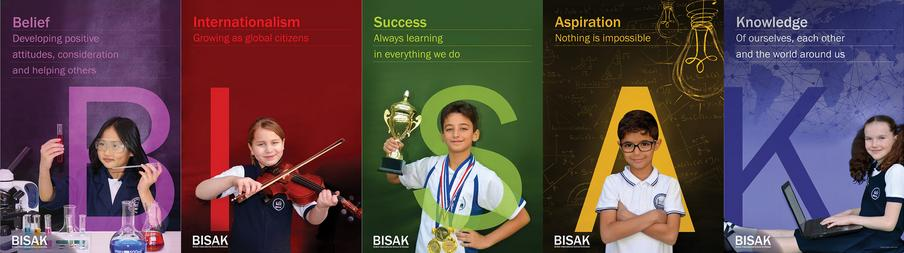
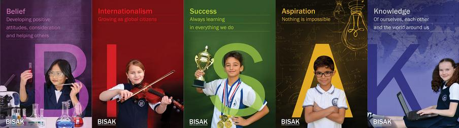

About us
 

Welcome to Our School
Dear Parents,
The British International School, Al Khobar (BISAK) has been providing the very best education for the wider community of Al Khobar since 1977. This year we have moved into our new 20 Million SAR state of the art campus. This not only demonstrates the success of our school but the trust the community has in us. We are committed to the growth and development of our school with the support of our community and the British Embassy. We are a not for profit school so all our resources are used to support our pupils learning. Our Governing body are volunteer British passport holding parents who are elected by our British parents to ensure the future of our school.
Our school motto, “Let there be peace on earth” symbolises what we expect from all members of our school. We are a community, and a family. This ideal impacts upon every element of our academic and personal lives. We expect everyone in our school to make the most of their opportunities, to learn something new each day and to reflect upon their experiences. We expect our pupils to work hard and always try their very best at everything that they do. We will assist them, by providing them with the best possible learning environment and outstanding teaching, in an atmosphere of order, discipline and care. In June 2017, our British School Overseas (BSO) inspection led by PENTA International stated that: “BISAK pupils achieve excellent levels of personal development feeling secure and valued within a friendly, mutually trustful learning environment that prevails throughout the school”. We are very proud of our school and our pupils. It is very heartening to have a professional and external organisation confirm what we already know. I joined the school as Head of Secondary in 2010 and I have had the privilege to watch our school grow and develop, as well as oversee the new build project and our move. I am very proud of our school and our achievements, both big and small, and I would like to thank all our pupils, staff, and Governors, both past and present, for all their hard work, effort and commitment to our School and to our pupils’ learning.
I hope that I have the opportunity in the near future to welcome you to our wonderful school.
Mr. Stephen Viner BSc (Hons), PGCE, NPQH, C. Mgr FCMI
Principal